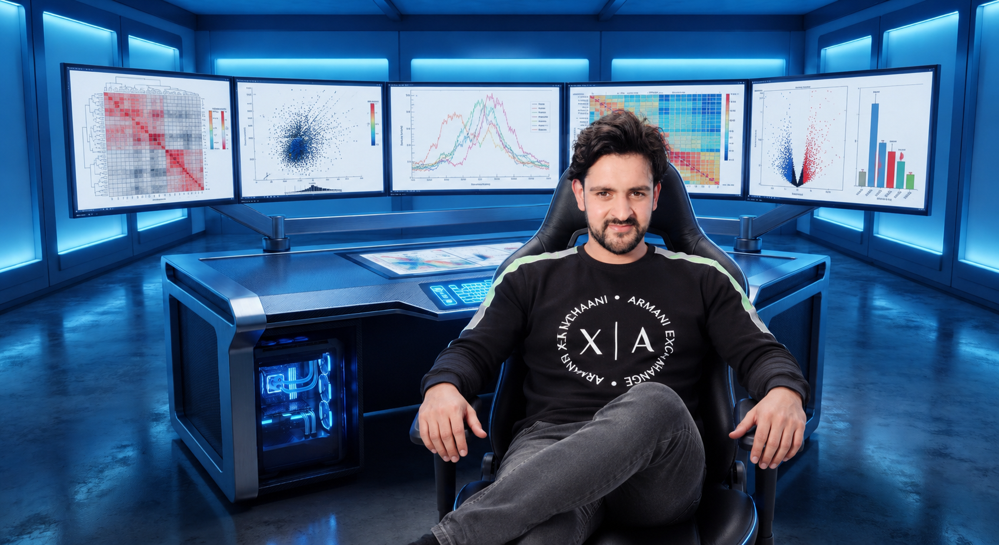

Pioneering Machine Learning architectures to decode 3D Spatial Genomics.
Applying Deep Learning and Predictive Modeling to Chromatin Organization.
Engineering scalable AI pipelines at the convergence of computational intelligence and bioinformatics.

My scientific trajectory is rooted in the resilience of Kashmir, advancing from foundational schooling to graduation in Bijbehara, completing my MCA at the Islamic University of Science and Technology (IUST), and now pursuing a PhD in Computer Science at the University of Kashmir. Grounded in a strong core background in Machine Learning and Artificial Intelligence, I apply deep learning architectures, graph neural networks, and pattern recognition systems to solve complex biological questions. Currently serving as a Project Research Scientist at the Chromatin and Epigenetics Lab (CIRI), I develop AI-driven pipelines to decipher high-order 3D spatial genomics and chromatin interactions. Alongside my algorithmic expertise, I bring elite systems-engineering competencies, including root-level kernel debugging, lossless system and storage recovery, HPC cluster management, and scalable enterprise application deployment.
My objective is to advance state-of-the-art Machine Learning frameworks specifically engineered for multi-dimensional biological datasets and 3D spatial genomics. Through my doctoral research at the University of Kashmir, I focus on constructing self-supervised and predictive AI models to uncover hidden chromatin conformation states, topologically associating domains (TADs), and gene regulation dynamics. I aim to deliver open-source ML pipelines, high-fidelity neural network simulations, and high-performance interactive tools that convert high-throughput genomic data into actionable biological insights, bridging Computer Science and Life Sciences.
University of Kashmir | Present
Islamic University of Science & Technology (IUST)
University of Kashmir
Vocational Certs
ML / DL
Python
PyTorch / TF
Bio-Pipelines
HPC / Linux
Sys Recovery
Web Dev
C / C++
AI-driven pipelines for 3D genomics, Hi-C/Micro-C data modeling, and predictive chromatin analysis.
OS installation, recovery, activation, kernel tuning, and advanced hardware troubleshooting.
Toolchain setup, environment configuration, patched utilities, and high-performance software builds.
Academic dashboards, web-based genomic visualizers, full-stack portals, and production deployment.
Scientific figures, publication posters, banners, presentations, and vector illustrations.
Automated reporting, advanced data spreadsheets, reference formatting, and LaTeX documentation.
Role: Lead Developer & System Architect
A centralized platform engineered for CIRI to manage laboratory instrument scheduling. Streamlines access protocols, tracks utilization metrics, and maintains transparent allocation for mission-critical scientific hardware.
Role: Lead Developer & System Architect
An institutional portal developed for IUST to automate university-wide recruitment drives. Features dynamic profile matching, automated transcript validation, and comprehensive predictive placement statistics.